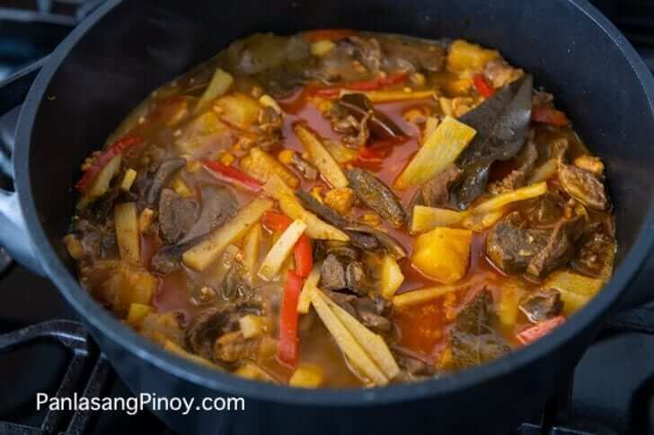

Paklay Recipe
What is Paklay?
This paklay recipe is simple and straightforward. For those that are not familiar with this dish, paklay is a stew made-up of pig and cow innards. This dish is popular in the southern parts of the Philippines and is best enjoyed as a main dish or as pulutan.
Ingredients
1 cup Bamboo shoots julienne
1 lb. pig liver sliced into thin strips
20 oz Pineapple chunks
5 pieces dried bay leaves
1/2 lb. pig kidney cleaned
1/2 lb. pig heart
1 lb. ox tripe
1/2 lb. pig stomach
1 piece red onion minced
1 head garlic minced
2 1/2 teaspoons Annatto powder
2 thumbs ginger minced
1 piece red bell pepper julienned
1 piece beef cube or 2 teaspoons beef powder
2 cups water for cooking
5 cups water for boiling
Salt and pepper to taste
3 tablespoons olive oil
Instructions / How to Cook
1. Boil 5 cups of water in a large cooking pot.
2. Once the water starts to boil, add 1 tablespoon salt, pig stomach and ox tripe. Boil in medium heat for 60 minutes.
3. Add the kidney and heart. Continue to boil for another 60 minutes or until all the innards are tender. Discard the water and let the innards cool down. Chop the innards and set aside.
4. Meanwhile, heat the cooking oil in a large clean cooking pot.
5. Sauté the onion, garlic, and ginger.
6. Once the onion gets soft, add the chopped innards, bay leaves, and liver. Cook for 3 minutes.
7. Add the pineapple chunks, bell pepper, and beef cube.
8. Pour-in 2 cups of water and add the annatto powder. Stir and let boil.
9. Add the bamboo shoots. Cover and simmer for 25 minutes. Add more water if needed.
10. Add salt and pepper to taste.
11. Transfer to a serving bowl.
12. Serve. Share and enjoy!